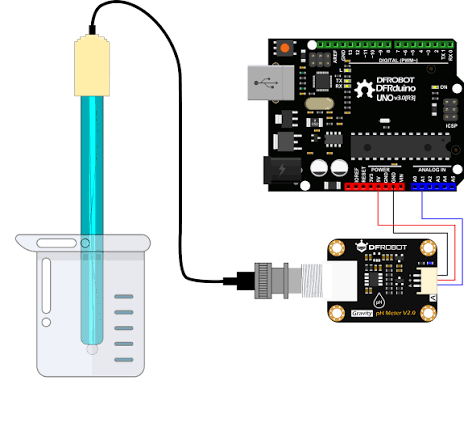
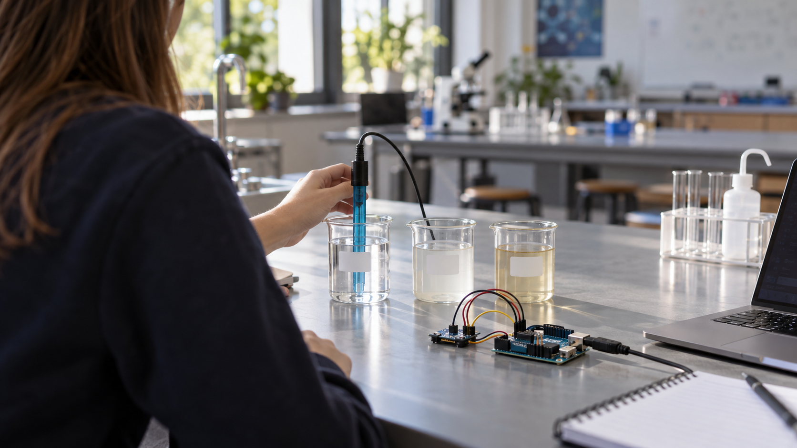

1
Verzamel
Neem een waterstaal en noteer waar en wanneer je het verzamelde.
Project Water
Meet de pH van verschillende waterstalen, bundel de metingen van de klas en gebruik Python om de data te onderzoeken.
Hoe werkt het?
Leerlingen werken in duo's. Ze verzamelen waterstalen, meten de pH en voegen hun metingen samen. Daarna gebruiken ze de klassendata in Python.
Neem een waterstaal en noteer waar en wanneer je het verzamelde.
Meet de pH met de sensor en voer dezelfde meting enkele keren uit.
Schrijf Python-code die de klassendata doorloopt, telt en vergelijkt.
Zoek verschillen tussen plaatsen, stalen en meetmomenten.
Vergelijk je hypothese met de data en noteer wat je wel en niet kan besluiten.
De opstelling
Een pH-sensor meet hoe zuur of basisch een waterstaal is. De Arduino leest de sensor uit en stuurt de meetwaarde naar de browser.

In beeld
Leerlingen werken met echte waterstalen, een pH-sensor en een Arduino. Dezelfde klassendata gebruiken ze daarna in Python.

Voorbeeldlocaties
De kaart toont enkele mogelijke locaties. Klik op een locatie of op een marker om ze op de kaart te bekijken. De punten zijn voorbeelden en bevatten geen echte meetresultaten.
Kaart laden ...
Wat leer je?
Leerlingen voeren meerdere metingen uit en vergelijken de resultaten.
Ze werken met lijsten, for, range, if, tellers en totalen.
Ze formuleren een hypothese, verzamelen gegevens en zoeken verschillen tussen waterstalen.
Ze gebruiken hun eigen data om een besluit te schrijven en benoemen wat nog onzeker is.
Plaats in de leerlijn
De platformen bouwen het computationeel denken op. De projecten gebruiken dat denken in een vakoverschrijdende opdracht waarin leerlingen bouwen, meten, testen en besluiten.
Voor leerkrachten
De opdracht is gemaakt voor leerlingen van ongeveer 14–16 jaar. Binnen Natuurwetenschappen, zoals biologie en chemie, onderzoeken leerlingen de waterstalen en de metingen. Binnen Informaticawetenschappen verwerken ze de klassendata met Python.
Meetgegevens worden in de browser verwerkt. Als leerlingen een foto gebruiken om plaats en tijd van een staal voor te stellen, lezen we alleen de gegevens die daarvoor nodig zijn. De leerling controleert die informatie zelf.
De klassendataset gebruikt groepscodes in plaats van leerlingnamen voordat die opnieuw met de klas wordt gedeeld. De kaart op deze landingspagina gebruikt kaarttegels van OpenStreetMap; daarbij gelden ook de voorwaarden van die externe dienst.
Het oorspronkelijke projectmateriaal van Robbe Wulgaert mag gratis worden gebruikt, gekopieerd en aangepast voor onderwijs, op voorwaarde dat “Robbe Wulgaert – AI in de Klas” duidelijk zichtbaar wordt vermeld. Componenten van derden blijven onder hun eigen licenties vallen.
Verzamel een staal, voer je metingen in en gebruik de klassendata in Python.